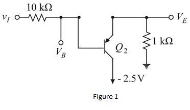
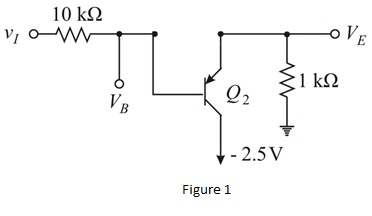
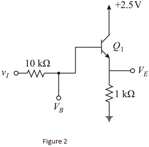
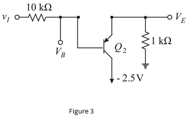
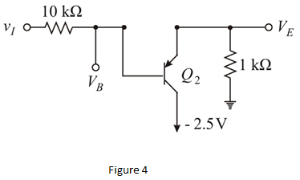

Refer to Figure P6.69 in the text book.
Consider the input voltage,
The transistor  is OFF and the transistor
is OFF and the transistor  is ON.
is ON.
Draw the equivalent circuit.

Refer to Figure P6.69 in the text book.
Consider the input voltage,
The transistor is OFF and the transistor is ON.
Draw the equivalent circuit.

For pnp transistor the base collector voltage is,

The base current is,
The emitter current is,
…… (1)
The emitter current from Figure 1 is,
…… (2)
Equate equation (1) and equation (2).
Substitute
Therefore, the value of base voltage  is.
is.
The emitter voltage is,
Therefore, the value of emitter voltage  is.
is.
Consider the input voltage,
The transistor  is ON and the transistor
is ON and the transistor  is OFF.
is OFF.
Draw the equivalent circuit.

The base current from Figure 2 is,
The emitter current is,
 …… (3)
…… (3)
The emitter current from Figure 2 is,
…… (4)
Equate equation (3) and equation (4).
Substitute 
Simplify further.
Therefore, the value of base voltage  is.
is.
The emitter voltage is,
Therefore, the value of emitter voltage is .
.
Consider the input voltage,
The transistor  is OFF and
is OFF and  is ON.
is ON.
Draw the equivalent circuit.

For pnp transistor the base collector voltage is,
The base current from Figure 3 is,
The emitter current is,

…… (5)
…… (6)
Equate equation (5) and equation (6).
Substitute
Simplify further.
Therefore, the value of base voltage  is.
is.
The emitter voltage is,
Therefore, the value of emitter voltage  is.
is.
Consider the input voltage,
The transistor  is OFF and the transistor
is OFF and the transistor  is ON.
is ON.

The collector emitter voltage in saturation mode is,
The collector voltage from Figure 4 is,
The emitter voltage is,
Therefore, the emitter voltage is.
The emitter current is,
In saturation emitter current is approximately equal to collector current,
The base current is,
Substitute for 
Therefore, the base voltage is.